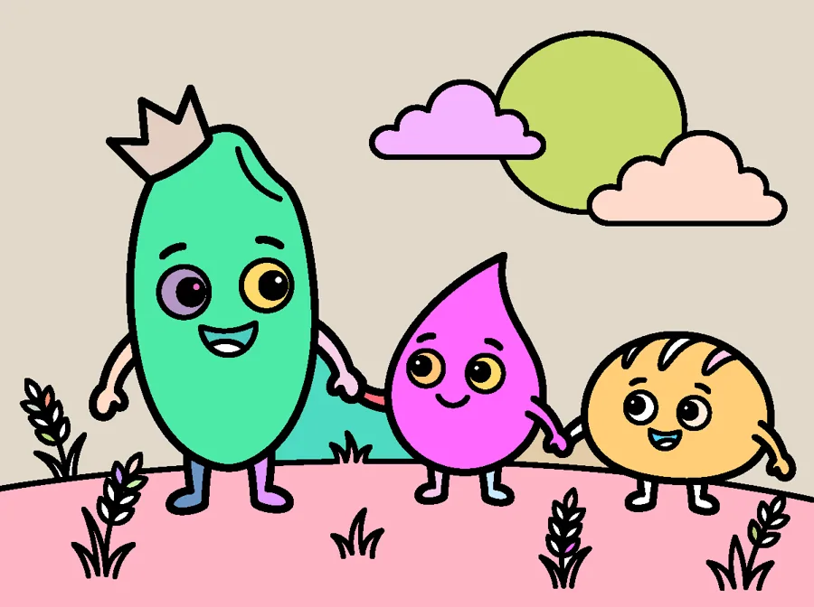
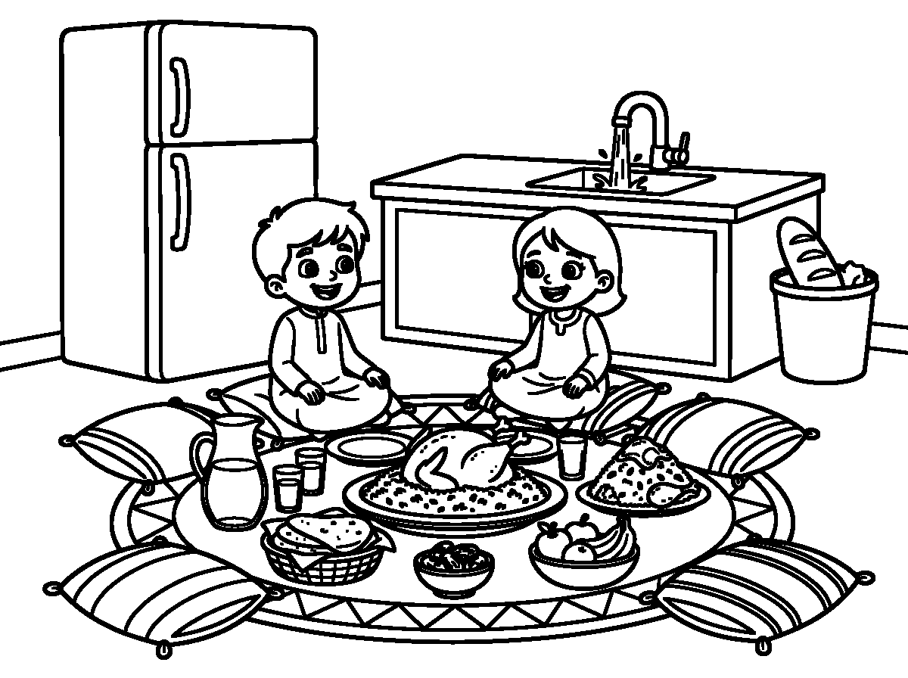

ألوان النعمة
هدفنا بسيط: نغرس في أطفالنا حفظ النعمة عن طريق الرسم والتلوين. الطفل يشارك من البيت، يلوّن على الموقع مباشرة أو يرفع رسمته، ونعرض عمله في معرض الجمعية، وله شهادة وتكريم.

مسابقة «سُفرة بلا هدر»
موضوع هذا الشهر: حفظ النعمة على سفرة العائلة — للأعمار من ٤ إلى ١٥ سنة.

أربع خطوات بسيطة
من اختيار الرسمة حتى الشهادة والتكريم — كل شيء داخل الموقع، وبدون تسجيل حساب.
اختر رسمتك
اختر رسمة جاهزة تلوّنها هنا، أو ارفع رسمة رسمها طفلك بيده.
لوّن وأرسل
أدوات سهلة للأطفال: دلو ألوان وفرشاة وتراجع — والعمل يُحفظ تلقائيًا.
مراجعة الجمعية
كل مشاركة تُراجع وتُعتمد قبل ظهورها في المعرض حفاظًا على الأطفال.
شهادة وتكريم
شهادة «سفير صغير لحفظ النعمة» باسم الطفل، وجوائز للفائزين.
الوعي يبدأ من الصغر
١٨٤ كجم
متوسط ما يهدره الفرد في المملكة من الطعام سنويًا، بحسب مؤشر الفقد والهدر الغذائي.
٤٠ مليار ريال
الكلفة السنوية المقدّرة للفقد والهدر الغذائي على مستوى المملكة.
٢٧٫٩٪
انخفض المؤشر الوطني من ٣٣٫١٪ — دليل أن التوعية تُحدث فرقًا حقيقيًا.
أرقام رسمية منشورة — تُعرض داخل الاختبار والمسابقات لربط النشاط بواقع المملكة.